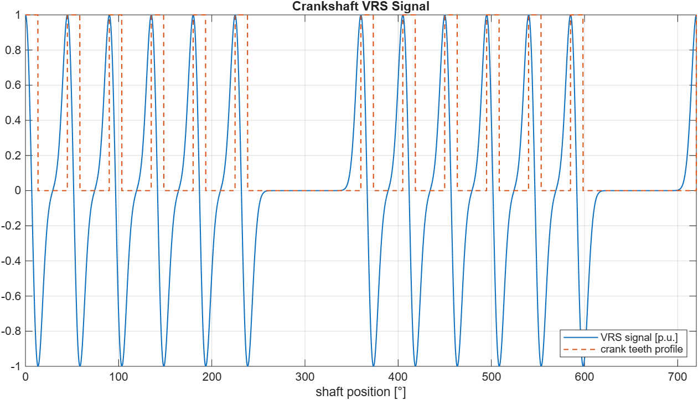
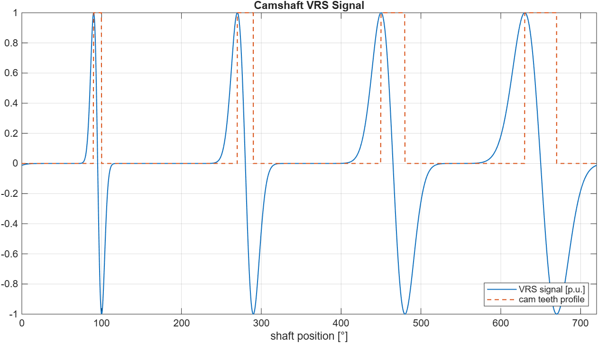

Cam and Crank - Variable Reluctance Sensor v4 — This code module emulates an analog output signal of a Variable Reluctance Sensor (VRS) to determine the position of a camshaft or crankshaft.
This code module emulates an analog Variable Reluctance Sensor (VRS) output signal for camshaft or crankshaft position simulation. The code module must be used in combination with the Crank Angle v4 code module, from which it inherits the high resolution position signal.
The VRS waveform is stored on the module as an angle-domain lookup table over one 720-degree engine cycle. The lookup table is read out based on the selected shaft position signal and optional offset. The lookup table contains the normalized waveform shape only [-1, 1]. Runtime Amplitude, Bias, and optional signal inversion are applied after the lookup table readout.
In single-table mode, one lookup table with 216 samples is used. In Multi Tables mode, four independently selectable lookup tables with 214 samples each are available on the module. Multi-table operation allows runtime switching between different VRS waveform shapes.
The lookup table can be initialized with a predefined camshaft or crankshaft waveform template. Alternatively, a custom signal vector can be loaded into the lookup table. Predefined and custom waveforms are normalized before being loaded to the module lookup table.
This driver block must be used in combination with an Analog Output block to enable and parameterize the corresponding analog output channels.
This input signal defines the voltage scaling applied to the normalized VRS lookup table waveform. For a waveform normalized to approximately the range [-1, 1], an Amplitude value of 1 V generates a waveform contribution of approximately +/-1 V before Bias is added. The output signal saturates if the analog output range is exceeded.
This input signal defines the voltage bias added after lookup table readout, optional signal inversion, and amplitude scaling. The resulting analog output is limited by the configured analog output range.
This input signal defines the angular offset in degrees between the selected angle reference and the VRS lookup table waveform. The offset is applied before the lookup table address is calculated. The resulting angle wraps over one 720-degree engine cycle.
This input signal selects which lookup table is used in Multi Tables mode. Valid values are integers from 1 to 4. Values outside this range are wrapped with Modulo 4.
Engine position signal between 0 and 720 degrees. It will output the angle reference + offset.
This parameter associates a code module block with a configurable I/O module setup block. Set this value to match the Module ID defined in the setup block of the required configurable I/O module.
The number of the channel which this driver block entity will access. Only one channel per driver block can be addressed. You can specify channels in the range 1-N where N is the number of channels implemented in your specific configuration file defined in the Setup block.
Defines the base sample time at which this driver block gets its sample hit. This parameter can also be set to -1 for inherited sample time. The units are in seconds.
Select which angle source channel to use for this VRS block.
Enable four lookup tables with a resolution of 214 samples each instead of one lookup table with a resolution of 216 samples. The lookup tables are stored on the module. If Multi Tables mode is enabled, the active lookup table can be selected during runtime with the Table Addr. input port.
If enabled, a new Table Addr. value is applied at the next block update. This can cause an output discontinuity if the old and new lookup tables have different values at the current angle.
If disabled, a new Table Addr. value is stored as a pending table change and is applied when the internal phase crosses the configured Change Angle.
Selects the angle at which a pending table change is applied. The range is from 0 to 720 degrees. A Change Angle of 0 degrees applies the pending table change at the 720-to-0 degree phase wrap, allowing the current lookup table cycle to complete before switching to the next table.
For clean transitions, choose a Change Angle where all involved lookup tables have similar values, preferably in a low-signal region.
Enable the Offset input port to change the angular offset relative to the selected angle reference during runtime.
Set a fixed angular offset relative to the selected angle reference. The offset is applied before the lookup table address is calculated. The resulting angle wraps over one 720-degree engine cycle.
Enable the position output for this driver block instance.
Invert the polarity of the signal waveform. The inversion is applied to the normalized lookup table waveform before amplitude scaling and bias are applied.
Generate or load a waveform lookup table on the module.
Predefined waveform for a crankshaft signal
Predefined waveform for a camshaft signal
Custom waveform based on a signal vector
The cam tooth start angle vector defines the starting angle of each cam tooth in degrees. The range is from 0 to 720 degrees.
The cam tooth length vector defines the length of each cam tooth in degrees. The vector length must match the number of elements of the cam tooth start angle vector.
Number of physical crank teeth per 360 degree crankshaft revolution, including missing teeth. Since the lookup table covers a 720-degree engine cycle, the crank pattern is represented over two crankshaft revolutions.
A vector with the indices of the missing crank teeth. The indices refer to the crank tooth numbering within one crankshaft revolution.
The relative width of a crank tooth within one tooth segment. The accepted range is between 0.1 and 0.5. A value of 0.5 results in a continuous sine wave signal for a crank pattern without missing teeth.
A vector describing a custom waveform for one complete 720-degree engine cycle. The samples are assumed to be uniformly distributed over the 720-degree cycle. The signal vector is normalized and loaded to the lookup table on the module. If required, the waveform is interpolated to match the selected lookup table size.
In single-table mode, the waveform is loaded to one 216 sample lookup table. In Multi Tables mode, one to four waveforms can be loaded to the four 214 sample lookup tables. Unused tables are initialized to zero.
The VRS code module is based on an angle-domain lookup table over one 720-degree engine cycle. In single-table mode, one lookup table with 216 samples is used. In Multi Tables mode, four independently selectable lookup tables with 214 samples each are available on the module.
The lookup table contains the normalized waveform shape. The final analog output voltage is generated by applying runtime signal inversion, Amplitude, and Bias after the lookup table readout.
Vout = Bias + Amplitude * LUT(mod(Angle + Offset, 720 deg))
Predefined camshaft and crankshaft templates can be used to initialize the lookup table. As a third option, a custom signal vector can be generated in MATLAB®, simulation, or from measurement data and loaded to the module lookup table.
Crankshaft
The crankshaft signal is generated based on the number of physical crank teeth per crankshaft revolution, the index of missing teeth, and the tooth width. Since the lookup table covers one 720-degree engine cycle, the crankshaft pattern is represented over two crankshaft revolutions.
The predefined crankshaft waveform is a simplified VRS template. The VRS signal is approximated by a sine-shaped pulse segment for each tooth such that the leading and trailing tooth edges are aligned with the positive and negative peaks of the generated waveform. The tooth width is the relative length of a tooth with respect to one segment. A tooth width of 0.5 results in a continuous sine wave signal for a crank pattern without missing teeth.
The following graph shows an example of a generated waveform for a crankshaft. The physical location of the teeth is indicated in orange. The signal is based on the following parameters:
Number of teeth per revolution, including missing teeth: 8
Missing teeth index vector: [7, 8]
Tooth width: 0.3

Camshaft
The camshaft signal is generated based on the starting angle of each tooth and its length in degrees. The predefined camshaft waveform is a simplified VRS template. The VRS signal is approximated by a sine-shaped pulse segment for each tooth such that the positive and negative edges of the tooth are aligned with the positive and negative peaks of the generated waveform.
The following graph shows an example of a generated waveform table for a camshaft. The physical location of the teeth is indicated in orange. This example is based on the following parameters:
Cam Tooth Start Angle Vector: [90, 270, 450, 630]
Cam Tooth Length Vector: [10, 20, 30, 40]

Custom
The lookup table can also be initialized with a custom waveform generated in MATLAB, simulation, or from measurement data. The custom waveform must describe one complete 720-degree engine cycle. The samples are assumed to be uniformly distributed over the 720-degree cycle.
Custom waveforms are normalized before being loaded to the module lookup table. Runtime Amplitude, Bias, and optional signal inversion are applied after the lookup table readout. The custom waveform should be periodic at the 0-to-720 degree boundary to avoid discontinuities during lookup table wraparound.
In single-table mode, one custom waveform is loaded into a 216 sample lookup table. In Multi Tables mode, one to four custom waveforms can be loaded into the four 214 sample lookup tables. Unused tables are initialized to zero.
The predefined sine-shaped camshaft and crankshaft templates provide a convenient synthetic waveform. They do not model speed-dependent VRS amplitude, air-gap effects, magnetic saturation, sensor loading, or ECU front-end behavior. For higher-fidelity VRS simulation, use the Custom waveform option and load a waveform generated from measurement data, magnetic simulation, or an external signal model.
Example MATLAB code for generating one single-table waveform:
% Generate one 2^16-sample waveform over 0 <= theta < 720 degrees. % Do not duplicate the 720 degree endpoint, because it is identical to 0 degrees. N = 2^16; theta = (0:N-1) * 720 / N; % Example: 10 sine periods per 360 degrees, therefore 20 periods over 720 degrees. signalVector = sin(deg2rad(10 * theta));
Example MATLAB code for resampling a custom periodic waveform to one 216 sample table:
% waveform contains one complete 720 degree cycle without duplicating the % 720 degree endpoint. Nout = 2^16; thetaIn = (0:numel(waveform)-1) * 720 / numel(waveform); thetaOut = (0:Nout-1) * 720 / Nout; % Add a periodic endpoint for interpolation only. thetaInExt = [thetaIn, 720]; waveformExt = [waveform(:).', waveform(1)]; signalVector = interp1(thetaInExt, waveformExt, thetaOut, 'pchip');
Example MATLAB code for creating a four-table waveform matrix in Multi Tables mode:
% Create a 4 x 2^14 waveform matrix. % Each row contains one complete 720 degree waveform. N = 2^14; wavetable = zeros(4, N); wavetable(1, :) = waveform_1_14k(:).'; wavetable(2, :) = waveform_2_14k(:).'; wavetable(3, :) = waveform_3_14k(:).'; wavetable(4, :) = waveform_4_14k(:).';